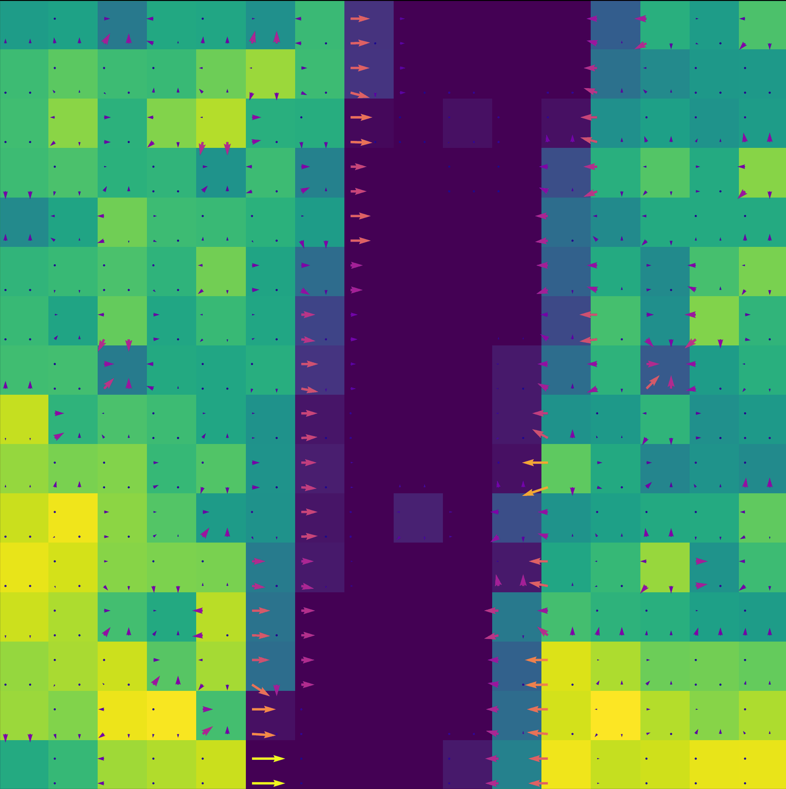
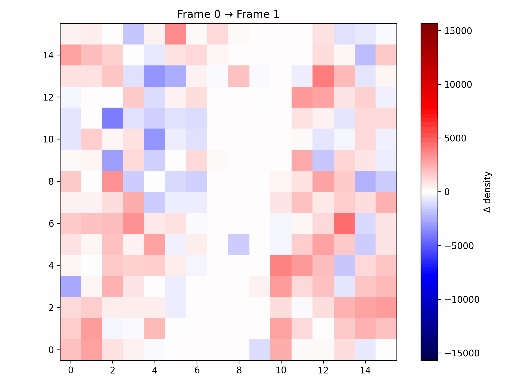
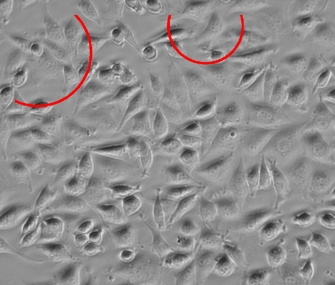

Details zur Analyse der Zellverteilung
Dichtegradienten
Anschließend wird aus der Zelldichte für jede Kachel ein lokaler Dichtegradient bestimmt. Dieser beschreibt Richtung und Stärke der räumlichen Dichteveränderung.
Ein Dichtegradient stellt dabei ein räumliches Ungleichgewicht dar. Da biologische Systeme auf solche Unterschiede reagieren und diese tendenziell ausgleichen können, liefert der Gradient eine wahrscheinlichste Richtung.

Frame-to-Frame-Analyse
Im nächsten Schritt wird betrachtet, wie sich die Zellverteilung tatsächlich zwischen aufeinanderfolgenden Frames verändert.

Migrations- und Proliferations-Hotspots
Abschließend werden Dichtegradient und tatsächliche zeitliche Veränderung miteinander kombiniert.
Dazu wird jede Kachel mit ihren direkt angrenzenden Nachbarkacheln verglichen. So wird zunächst bestimmt, in welche Richtung der größte Dichteunterschied besteht. Anschließend wird geprüft, ob sich die Zellverteilung zwischen den Frames tatsächlich in diese Richtung verändert.
Stimmen beide Informationen überein, kann dies auf ein Bewegungsmuster und damit einen möglichen Migrations-Hotspot hinweisen.
Nimmt die Zelldichte dagegen lokal zu, ohne dass eine entsprechende Verschiebung in den Nachbarkacheln erkennbar ist, spricht dies eher für einen Proliferations-Hotspot.
Rückprojektion
Die ermittelten Hotspot-Koordinaten werden anschließend auf das ursprüngliche Bildmaterial zurückprojiziert. Dadurch können die berechneten Bereiche direkt im Bild betrachtet und über die Zeit verfolgt werden.
